class: center, middle, title <div style="height:220px"> <h3>Towards high spatial resolution air quality mapping: a methodology to assess street-level exposure based on mobile monitoring</h3> </div> .large[Joris Van den Bossche] .small[ Promotors:<br> Bernard De Baets<br> Dick Botteldooren<br> Jan Theunis] .affiliations[   ] --- class: center, middle, title count: false <div style="height:220px"> <h3>Luchtkwaliteitskaarten met een hoge ruimtelijke resolutie: een methodologie om de blootstelling op straatniveau te beoordelen op basis van mobiele metingen</h3> </div> .large[Joris Van den Bossche] .small[ Promotors:<br> Bernard De Baets<br> Dick Botteldooren<br> Jan Theunis] .affiliations[   ] --- class: center, middle, inverse # "How is the air quality?" # "Is it good or bad?" ??? Good and justified question, but very difficult to answer as a researcher. --- class: left, top ## Air quality over time .center[  .credits[ Emissions of air pollutants, EU-28, 1990-2013, Index 1990=100, Source: EEA ] ] ??? Air quality good or bad? * Compared to previous times: it is now much better (in Belgium in first half of 20th century: big smog periods with lots of Deaths in Maasbekken, also London smog in 1952) * Compared to other regions in the world: in Europe much better But, that does not mean that there is no impact anymore on human health: next slide. --- ## Health impact Worldwide 3.7 million deaths attributable to ambient air pollution (WHO 2012) Air Quality Guidelines Exposure of urban population in EU to PM2.5 * 9% exposed to concentrations > EU limit * 87% exposed to concentrations > WHO limit --- ## Urban air quality .center[  ] ??? many different pollutants --- ## Air quality: large spatial variability <!-- ## Air quality: large temporal variability --> --- ### Quantifying pollutant concentration levels Traditional measurement approach: * “Yearly average at a reference monitoring station“ * Accurate, good temporal coverage * But, poor spatial coverage .right[   ] --- count: false ### Quantifying pollutant concentration levels Traditional measurement approach: * “Yearly average at a reference monitoring station“ * Accurate, good temporal coverage * But, poor spatial coverage .align-right[  ] --- ### Quantifying pollutant concentration levels Traditional measurement approach: * “Yearly average at a reference monitoring station“ * Accurate, good temporal coverage * But, poor spatial coverage Alternative measurement approaches: * Low cost sensors at many locations * Mobile monitoring Modeling (dispersion models, regression models) --- ## Low cost gas sensors <div style="margin-bottom: 3cm;"> </div>    Problem: low-cost sensors not yet reliable enough --- class: center, middle  --- ## Portable devices More expensive monitors .center[   ] --- ### Quantifying pollutant concentration levels Traditional measurement approach: * “Yearly average at a reference monitoring station“ * Accurate, good temporal coverage * But, poor spatial coverage Alternative measurement approaches: * Low cost sensors at many locations * Mobile monitoring Modeling (dispersion models, regression models) --- count: false ### Quantifying pollutant concentration levels Traditional measurement approach: * “Yearly average at a reference monitoring station“ * Accurate, good temporal coverage * But, poor spatial coverage Alternative measurement approaches: * Low cost sensors at many locations * .darkred[**Mobile monitoring**] Modeling (dispersion models, .darkred[**regression models**]) --- ## Challenges of mobile monitoring * Urban air quality (BC) => large (temporal) variability * Spatio-temporal data => limited temporal resolution --- count:false ## Challenges of mobile monitoring * **Urban air quality (BC) => large (temporal) variability** * Spatio-temporal data => limited temporal resolution <table class="layout-table" border=0 style="text-align:center; padding=0"> <col style="width:33%"> <col style="width:33%"> <col style="width:33%"> <tr> <th>1) Short term</th> <th>2) Diurnal variation</th> <th>3) Day-to-day</th> </tr> <tr> <td style="padding:0;">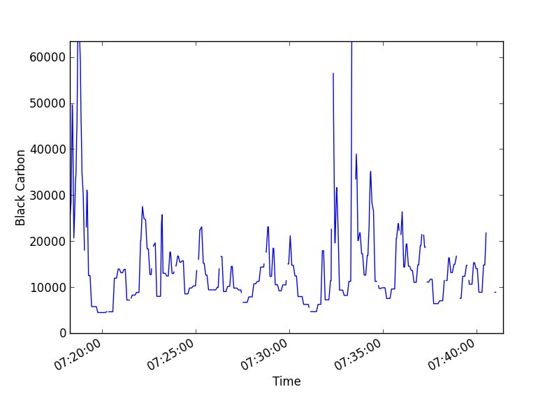</td> <td style="padding:0;">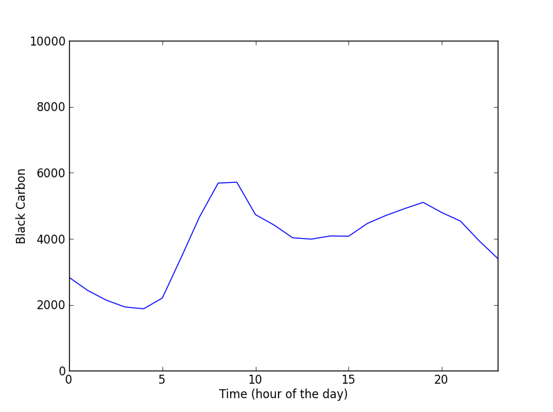</td> <td style="padding:0;">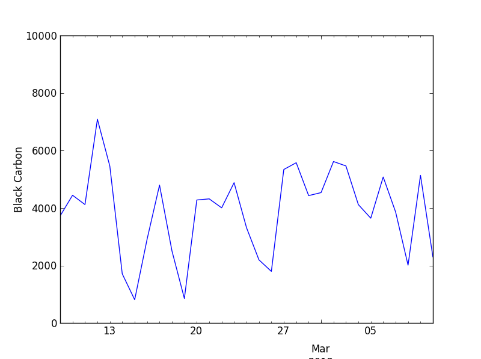</td> </tr> <tr> <td>=> Events, e.g. passing car, …</td> <td>=> Traffic intensity,<br>…</td> <td>=> Meteorological conditions, seasonal variation, …</td> </tr> </table> --- ## Challenges of mobile monitoring * Urban air quality (BC) => large (temporal) variability * **Spatio-temporal data => limited temporal resolution** --- ## Challenges of mobile monitoring * Urban air quality (BC) => large (temporal) variability * Spatio-temporal data => limited temporal resolution => consequence: large variability in collected data => question: does the mapped concentration give a representative value? --- class: inverse, middle <table class="layout-table" border=0 width="100%"> <col style="width:87%"> <col style="width:13%"> <tr> <td><h3>1. Can we map the air quality with mobile monitoring?</h3></td> <td rowspan="2"></td> </tr> <tr> <td><h3>2. How many repeated measurement runs do we need?</h3></td> </tr> <tr> <td><h3>3. Can we gather mobile measurements more easily?</h3></td> <td></td> </tr> <tr> <td><h3>4. Can we extrapolate the measurements?</h3></td> </tr> </table> ??? ### 1. Can we map the air quality with mobile monitoring? ### 2. How many repeated measurement runs do we need? ### 3. Can we gather mobile measurements more easily? ### 4. Can we extrapolate the measurements --- class: inverse, middle count: false <table class="layout-table" border=0 width="100%"> <col style="width:87%"> <col style="width:13%"> <tr> <td><h3>1. Can we map the air quality with mobile monitoring?</h3></td> <td rowspan="2" style="vertical-align:center"><div style="border-left:5px solid #FFFFFF; height:200px; padding:10px;"><p style="text-align: center; font-size: 120%;">Case<br>study<br>1</p></div></td> </tr> <tr> <td><h3>2. How many repeated measurement runs do we need?</h3></td> </tr> <tr> <td><h3>3. Can we gather mobile measurements more easily?</h3></td> <td rowspan="2" style="vertical-align:center"><div style="border-left:5px solid #FFFFFF; height:200px; padding:10px;"><p style="text-align: center; font-size: 120%;">Case<br>study<br>2</p></div></td> </tr> <tr> <td><h3>4. Can we extrapolate the measurements?</h3></td> </tr> </table> --- class: inverse, middle count: false <table class="layout-table" border=0 width="100%"> <col style="width:87%"> <col style="width:13%"> <tr> <td><h3 class='darkred'>1. Can we map the air quality with mobile monitoring?</h3></td> <td rowspan="2" style="vertical-align:center"><div style="border-left:5px solid #FFFFFF; height:200px; padding:10px;"><p style="text-align: center; font-size: 120%;">Case<br>study<br>1</p></div></td> </tr> <tr> <td><h3>2. How many repeated measurement runs do we need?</h3></td> </tr> <tr> <td><h3>3. Can we gather mobile measurements more easily?</h3></td> <td rowspan="2" style="vertical-align:center"><div style="border-left:5px solid #FFFFFF; height:200px; padding:10px;"><p style="text-align: center; font-size: 120%;">Case<br>study<br>2</p></div></td> </tr> <tr> <td><h3>4. Can we extrapolate the measurements?</h3></td> </tr> </table> --- ## Case study in Antwerp 2 routes in Antwerp<br> Many repeated runs: .red[256] and .blue[96] UFP : P-Trak ultrafine particle counter<br> BC : micro-aethalometer   --- ## Large small-scale spatial differences  ??? Dageraadplaats / Stadspark -> expliciet zeggen dat het rustige verkeerslocaties zijn --- ## Large small-scale spatial differences  ???    --- ## Comparison stationary - mobile measurements .center[  ] ??? Yes, mobile monitoring methodology works: * typical pattern emerges --- class: inverse, middle <table class="layout-table" border=0 width="100%"> <col style="width:87%"> <col style="width:13%"> <tr> <td><h3>1. Can we map the air quality with mobile monitoring?</h3></td> <td rowspan="2" style="vertical-align:center"><div style="border-left:5px solid #FFFFFF; height:200px; padding:10px;"><p style="text-align: center; font-size: 120%;">Case<br>study<br>1</p></div></td> </tr> <tr> <td><h3 class='darkred'>2. How many repeated measurement runs do we need?</h3></td> </tr> <tr> <td><h3>3. Can we gather mobile measurements more easily?</h3></td> <td rowspan="2" style="vertical-align:center"><div style="border-left:5px solid #FFFFFF; height:200px; padding:10px;"><p style="text-align: center; font-size: 120%;">Case<br>study<br>2</p></div></td> </tr> <tr> <td><h3>4. Can we extrapolate the measurements?</h3></td> </tr> </table> --- layout: true ## Resampling exercise Idea: simulate a measurement campaign by drawing samples with replacement --- count: false .left-column[ <table class="sampling"> <tr> <td>25</td><td>20</td><td>15</td><td>29</td> </tr> <tr> <td>15</td><td>17</td><td>35</td><td>22</td> </tr> <tr> <td>22</td><td>26</td><td>32</td><td>24</td> </tr> <tr> <td>19</td><td>21</td><td>25</td><td>41</td> </tr> <tr> <td>27</td><td>31</td><td>24</td><td>29</td> </tr> </table> .center[Mean = 25] ] --- count: false .left-column[ <table class="sampling"> <tr> <td>25</td><td>20</td><td>15</td><td>29</td> </tr> <tr> <td>15</td><td>17</td><td>35</td><td>22</td> </tr> <tr> <td>22</td><td>26</td><td>32</td><td>24</td> </tr> <tr> <td>19</td><td class="selected">21</td><td>25</td><td>41</td> </tr> <tr> <td>27</td><td>31</td><td>24</td><td>29</td> </tr> </table> .center[Mean = 25] ] .right-column[ <table class="sampling"> <tr> <td class="selected">21</td><td></td><td></td><td></td><td></td><td></td><td></td><td></td><td></td> </tr> </table>  .center[Mean = 21] ] --- count: false .left-column[ <table class="sampling"> <tr> <td>25</td><td>20</td><td>15</td><td>29</td> </tr> <tr> <td>15</td><td>17</td><td class="selected">35</td><td>22</td> </tr> <tr> <td>22</td><td>26</td><td>32</td><td>24</td> </tr> <tr> <td>19</td><td>21</td><td>25</td><td>41</td> </tr> <tr> <td>27</td><td>31</td><td>24</td><td>29</td> </tr> </table> .center[Mean = 25] ] .right-column[ <table class="sampling"> <tr> <td>21</td><td class="selected">35</td><td></td><td></td><td></td><td></td><td></td><td></td><td></td> </tr> </table>  .center[Mean = 28] ] --- count: false .left-column[ <table class="sampling"> <tr> <td>25</td><td>20</td><td class="selected">15</td><td>29</td> </tr> <tr> <td>15</td><td>17</td><td>35</td><td>22</td> </tr> <tr> <td>22</td><td>26</td><td>32</td><td>24</td> </tr> <tr> <td>19</td><td>21</td><td>25</td><td>41</td> </tr> <tr> <td>27</td><td>31</td><td>24</td><td>29</td> </tr> </table> .center[Mean = 25] ] .right-column[ <table class="sampling"> <tr> <td>21</td><td>35</td><td class="selected">15</td><td></td><td></td><td></td><td></td><td></td><td></td> </tr> </table>  .center[Mean = 23.7] ] --- count: false .left-column[ <table class="sampling"> <tr> <td>25</td><td>20</td><td>15</td><td>29</td> </tr> <tr> <td>15</td><td>17</td><td>35</td><td>22</td> </tr> <tr> <td>22</td><td>26</td><td>32</td><td class="selected">24</td> </tr> <tr> <td>19</td><td>21</td><td>25</td><td>41</td> </tr> <tr> <td>27</td><td>31</td><td>24</td><td>29</td> </tr> </table> .center[Mean = 25] ] .right-column[ <table class="sampling"> <tr> <td>21</td><td>35</td><td>15</td><td class="selected">24</td><td></td><td></td><td></td><td></td><td></td> </tr> </table>  .center[Mean = 23.8] ] --- count: false .left-column[ <table class="sampling"> <tr> <td>25</td><td>20</td><td>15</td><td>29</td> </tr> <tr> <td>15</td><td>17</td><td>35</td><td>22</td> </tr> <tr> <td>22</td><td>26</td><td>32</td><td>24</td> </tr> <tr> <td>19</td><td>21</td><td>25</td><td>41</td> </tr> <tr> <td>27</td><td>31</td><td>24</td><td>29</td> </tr> </table> .center[Mean = 25] ] .right-column[ <table class="sampling"> <tr> <td>21</td><td>35</td><td>15</td><td>24</td><td>29</td><td>26</td><td>29</td><td>17</td><td>27</td> </tr> </table>  .center[Mean = 24.8] ] ---  --- layout: false ## Mobile monitoring for mapping the urban air quality: methodology Decrease required number of repetitions <table> <tr> <th></th> <th colspan="2">25% uncertainty<br></th> <th colspan="2">50% uncertainty<br></th> </tr> <tr> <th></th> <th>Standard</th> <th>Processed</th> <th>Standard</th> <th>Processed</th> </tr> <tr> <td>Route</td> <td>17</td> <td>12</td> <td>4</td> <td>4</td> </tr> <tr> <td>50 m segments</td> <td></td> <td></td> <td></td> <td></td> </tr> <tr> <td style="text-align:right">10%</td> <td>33</td> <td>24</td> <td>8</td> <td>5</td> </tr> <tr> <td style="text-align:right">50%</td> <td>57</td> <td>42</td> <td>14</td> <td>8</td> </tr> <tr> <td style="text-align:right">90%</td> <td>141</td> <td>94</td> <td>39</td> <td>11</td> </tr> </table> ??? 33 keer herhalen -> 10% van de locaties die goed in kaart zijn gebracht 57 keer herhalen -> goed in 50% van de locaties (40% bijgekomen) => verbeteren? - verwerken (trimmed mean voor outliers/events, background normalisation voor temporal variation) - larger uncertainty (toleranter zijn, relatieve fout van 50% toelaten ipv 25%) --- ## Mobile monitoring methodology It is possible to **reproducibly map the air quality** in a specific area using mobile measurements: * **Trimmed mean** as an integrated outlier detection method to reduce impact of extreme events * **Background normalisation** to account for temporal variation in background concentrations * **Spatial aggregation** to smooth the data: spatial resolution up to 20 to 50 m is feasible * **Repeated measurements** are required to obtain representative value ??? Op basis van deze methodologie is airQmap ontwikkeld: niet "elke" bol zal correct zijn, nog aanzienlijke onzekerheid op, maar wel een goede indicatie airQmap: compromis van tussen de 20 en de 30 herhalingen --- ## airQmap : DIY air quality monitoring  --- ## airQmap : DIY air quality monitoring .center[    ] --- class: inverse, middle <table class="layout-table" border=0 width="100%"> <col style="width:87%"> <col style="width:13%"> <tr> <td><h3>1. Can we map the air quality with mobile monitoring?</h3></td> <td rowspan="2" style="vertical-align:center"><div style="border-left:5px solid #FFFFFF; height:200px; padding:10px;"><p style="text-align: center; font-size: 120%;">Case<br>study<br>1</p></div></td> </tr> <tr> <td><h3>2. How many repeated measurement runs do we need?</h3></td> </tr> <tr> <td><h3 class='darkred'>3. Can we gather mobile measurements more easily?</h3></td> <td rowspan="2" style="vertical-align:center"><div style="border-left:5px solid #FFFFFF; height:200px; padding:10px;"><p style="text-align: center; font-size: 120%;">Case<br>study<br>2</p></div></td> </tr> <tr> <td><h3>4. Can we extrapolate the measurements?</h3></td> </tr> </table> ??? Conclusie: we hebben een methodologie om indicatief de luchtkwaliteit in kaart te brengen (wordt ook toegepast in airQmap door VITO) Voorgaande: gericht gemeten, zelf specifiek voor de campagne gaan fietsen: arbeidsintentief => makkelijkere methode om te meten? --- ## Opportunistic measurements Other ways to increase number of repetitions: making use of existing mobility, taking advantage of existing infrastructure or normal daily routines: * City wardens, postmen, ... * Commuters * Trams, buses, ... .tight[.right[  .credits[OpenSense: streetcar with sensor node on top (Hasenfratz et al., 2015)] ]] ??? "We" defined --- ## Antwerp city wardens case study City wardens measured BC during surveillance tours for a one-year period (from July 2012 until June 2013) 393 hours of measurements spread over 110 days Unstructured data collection is unevenly spread in space and/or time    ??? Targeted = 'gericht' -> duidelijk contrast vermelden tussen opport vs targeted "wij definieren dat als .. " !! --- ## City wardens: sampling bias <table class="layout-table" border=0> <col style="width:60%"> <col style="width:40%"> <tr> <td rowspan="2" style="padding:0"> 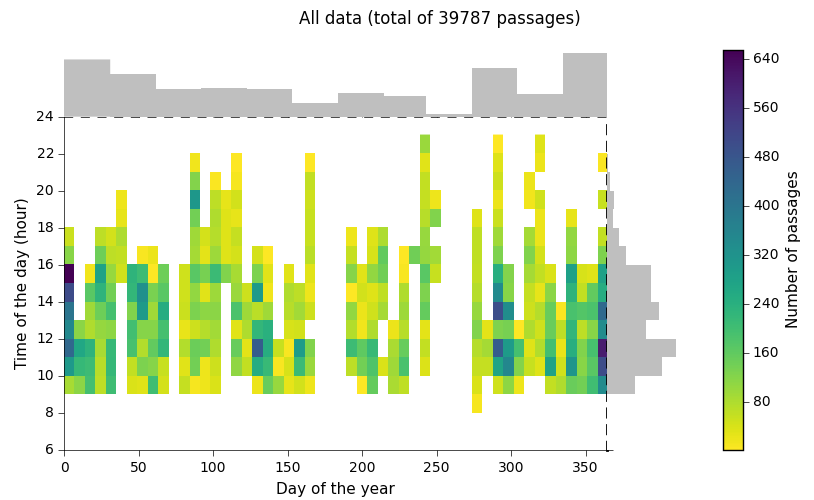 </td> <td style="padding:0"> 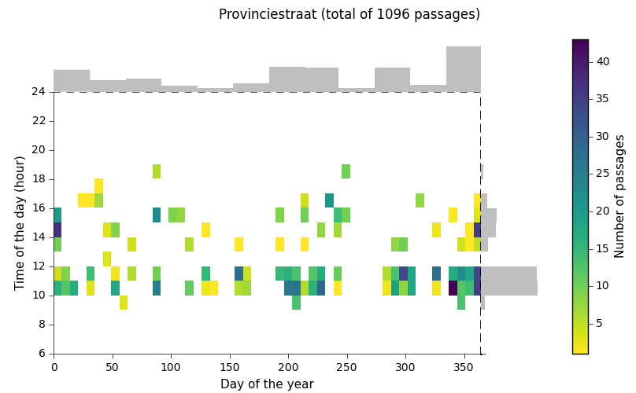 </td> </tr> <td style="padding:0"> 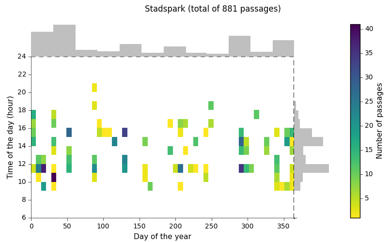 </td> </tr> </table> ??? --- ## City wardens: results  --- ## Comparison with targeted campaign <table class="layout-table" border=0> <tr> <th></th> <th>Stadspark</th> <th>Plantin en Moretuslei</th> </tr> <tr> <td>City<br>wardens</td> <td>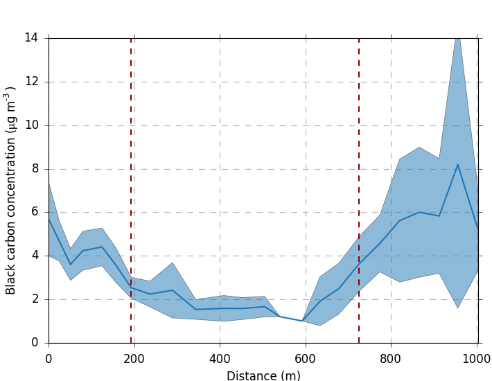</td> <td>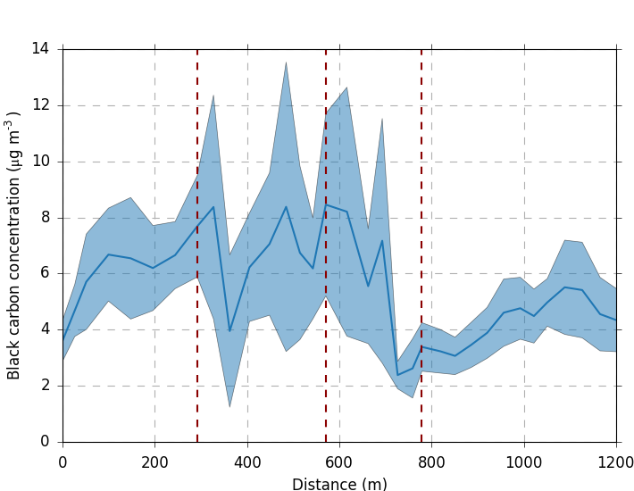</td> </tr> <tr> <td>Targeted<br>measurements</td> <td>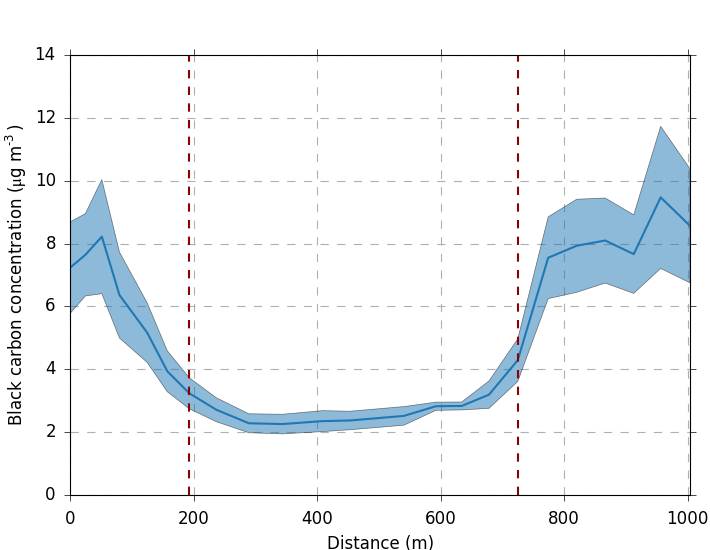</td> <td>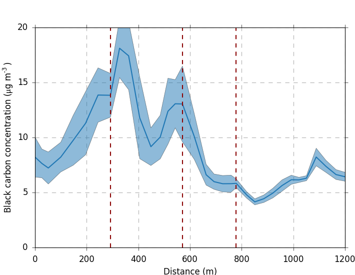</td> </tr> </table> --- class: inverse, middle <table class="layout-table" border=0 width="100%"> <col style="width:87%"> <col style="width:13%"> <tr> <td><h3>1. Can we map the air quality with mobile monitoring?</h3></td> <td rowspan="2" style="vertical-align:center"><div style="border-left:5px solid #FFFFFF; height:200px; padding:10px;"><p style="text-align: center; font-size: 120%;">Case<br>study<br>1</p></div></td> </tr> <tr> <td><h3>2. How many repeated measurement runs do we need?</h3></td> </tr> <tr> <td><h3>3. Can we gather mobile measurements more easily?</h3></td> <td rowspan="2" style="vertical-align:center"><div style="border-left:5px solid #FFFFFF; height:200px; padding:10px;"><p style="text-align: center; font-size: 120%;">Case<br>study<br>2</p></div></td> </tr> <tr> <td><h3 class='darkred'>4. Can we extrapolate the measurements?</h3></td> </tr> </table> ??? Extrapoleren naar waar 'niet' OF 'onvoldoende' gemeten is! --- ## Land Use Regression (LUR) models ??? Veel gebruikte methode in de literatuur, maar in mijn thesis: - op basis van mobiele metingen (smaller scale differences) - beter evalueren - tijdsdimensie meenemen -- count: false * Characteristics of each location: traffic, land use, population, geography * Background concentration at VMM stations .center[  ] --- ## Evaluation: cross-validation Evaluation on 'independent' data: .center[] Different methods: * Leave-one-out cross-validation * Random n-fold cross-validation --- ## Spatial cross-validation .center[  ] --- ## Spatial prediction <table class="layout-table" border=0> <col style="width:50%"> <col style="width:50%"> <tr> <td> <figure style="margin-top: 0px;margin-left: 0px;margin-right: 20px;margin-bottom: 0px;"> <figcaption>Measured</figcaption> 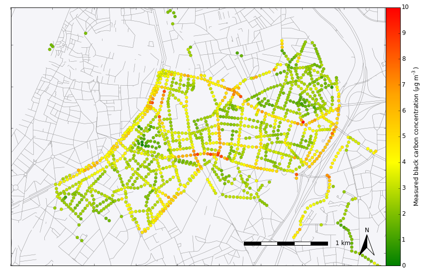 </figure> </td> <td rowspan="2"> 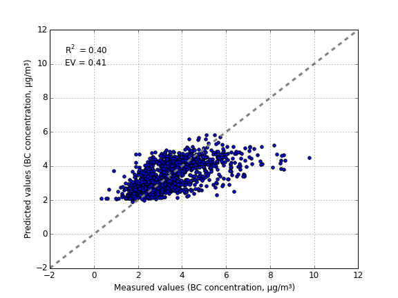 </td> </tr> <td> <figure style="margin-top: 0px;margin-left: 0px;margin-right: 20px;margin-bottom: 0px;"> <figcaption>Predicted</figcaption> 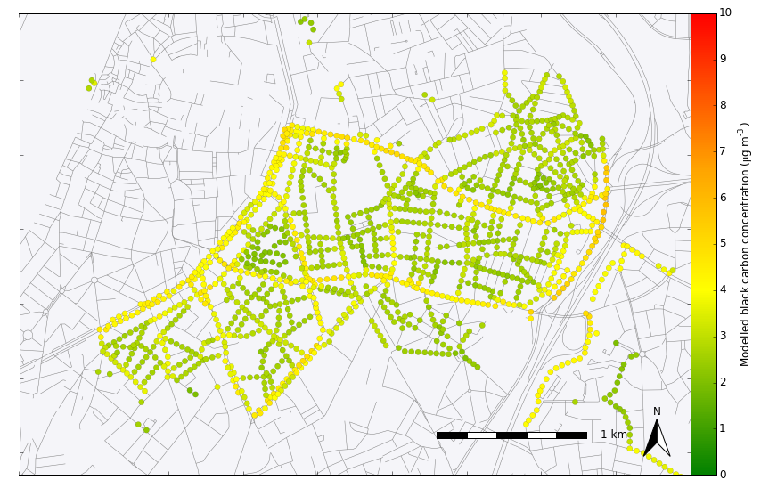 </figure> </td> </tr> </table> ??? Geen spectaculaire resultaten Dit is spatiaal, maar willen ook weten hoe de luchtkwaliteit op een bepaald moment is => temporele aspect toevoegen aan het model. --- ## Spatio-temporal prediction Trips --- ## Spatio-temporal prediction .center[.middle[]] --- ## Spatio-temporal prediction vs VMM station <table class="layout-table" border=0> <tr> <th>Based on VMM station</th> <th>Spatio-temporal LUR model</th> </tr> <tr> <td><img src="images/LUR/dynamic-evaluation-trip-VMM_hourly_back.png" width="100%"></td> <td>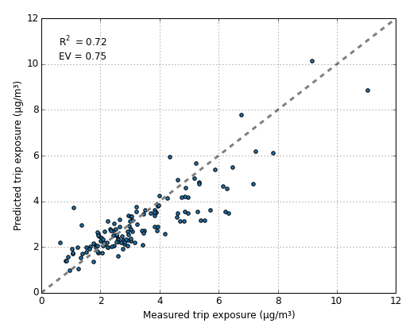</td> </tr> </table> ???   --- class: inverse, middle ### 1. Can we map the air quality with mobile monitoring? ### 2. How many repeated measurement runs do we need? ### 3. Can we gather mobile measurements more easily? ### 4. Can we extrapolate the measurements --- ## Conclusions Mobile air quality monitoring * Potential for mapping small-scale variations * Need for repeated measurements + careful processing and interpretation * Opportunistic monitoring * Predict exposure along GPS tracks with LUR models --- ## Conclusions Changing paradigm * Increasing interest from citizens, participatory monitoring * Low-cost-sensors Spatio-temporal LUR as proof-of-concept for a real-time dynamic pollution map --- class: center, middle # Thank you for your attention! <div style="margin-bottom: 3cm;"> </div> .affiliations[   ] ??? KermitFit thanks verschillende teams vermelden